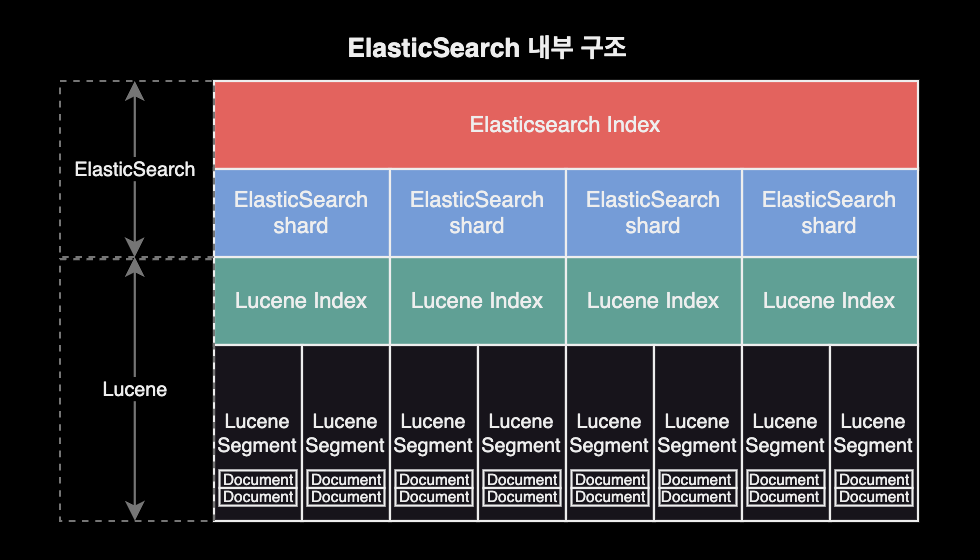
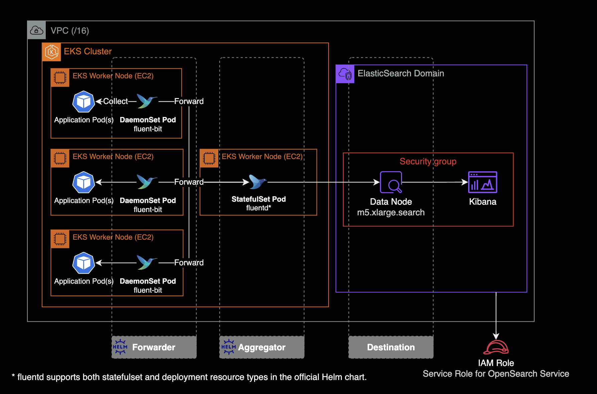
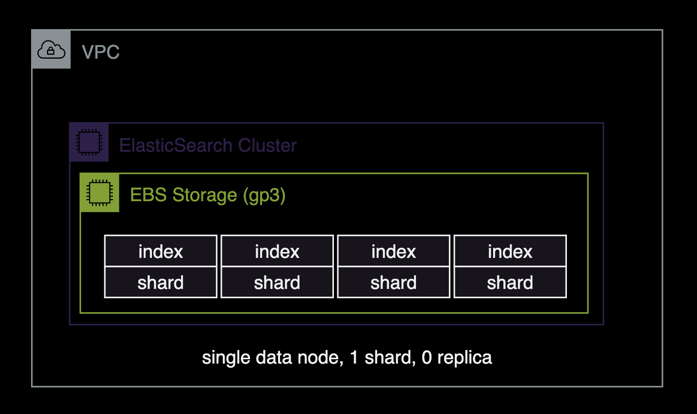
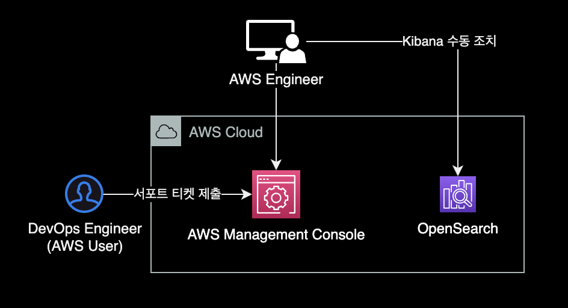
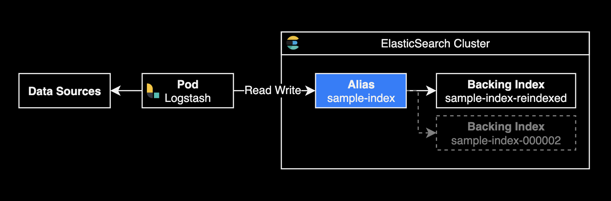
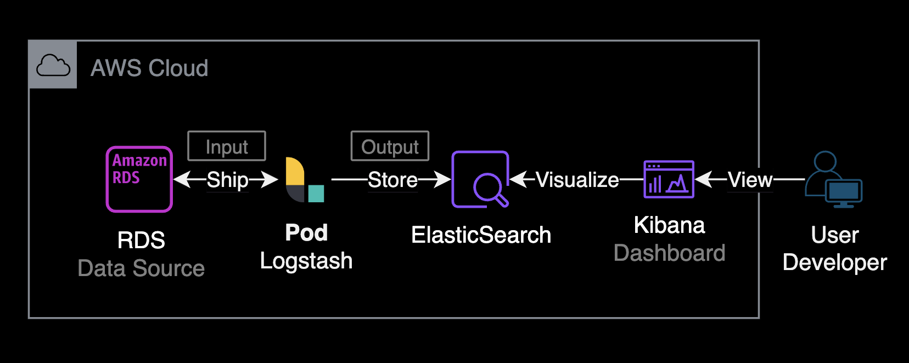
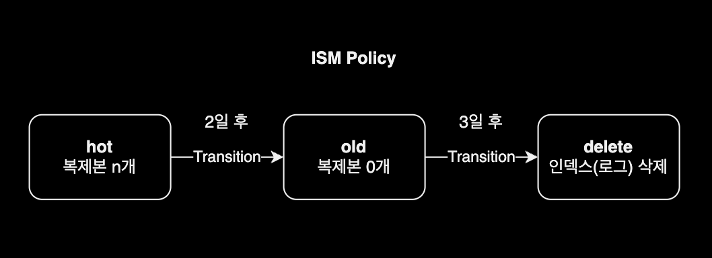

Elasticsearch
개요
OpenSearch, ElasticSearch 운영자를 위한 가이드 문서입니다.
환경
- Amazon OpenSearch
- Elasticsearch 7.1
샤드
자세히 보기
기본개념
Elasticsearch의 각 인덱스는 하나 이상의 샤드로 나누어지며, 각 샤드는 하드웨어 오류로부터 보호하기 위해 여러 노드에 걸쳐 복제될 수 있습니다.
ElasticSearch 내부구조

샤드 구성 모범사례
- 적절한 샤드 크기 선택 : 샤드당 용량은 일반적으로 10GB ~ 50GB 사이로 유지하는 것이 이상적입니다. 이 범위를 벗어나는 경우 샤드가 너무 커지거나 작아져서 성능 문제가 발생할 수 있습니다.
- 일관된 샤드 크기 유지 : 모든 인덱스의 샤드 크기가 일관되도록 유지하는 것이 중요합니다. 샤드 크기가 큰 인덱스는 작은 인덱스와 동일한 노드에서 실행될 때 성능 문제를 야기할 수 있습니다.
# cat shards API로 현재 샤드 크기 확인
curl \
-X GET \
"$ES_ENDPOINT/_cat/shards?v=true&h=index,prirep,shard,store&s=prirep,store&bytes=gb&pretty"
index prirep shard store
podlog-2024.02.13 p 3 38
podlog-2024.02.13 p 2 38
podlog-2024.02.13 p 0 38
podlog-2024.02.13 p 1 38
podlog-2024.02.13 p 4 38
- Rollover로 용량 자동조정 : 인덱스 상태 관리ISM, Index State Management 기능을 사용하는 경우 롤오버 작업의
max_primary_shard_size임계값을50GB로 설정하여 샤드가50GB보다 커지지 않도록 합니다.
제약사항
자세히 보기
ElasticSearch 관리자의 API 제한
- AWS Managed Service 중 하나인 OpenSearch는 Elasticsearch를 기반으로 하지만, 모든 Elasticsearch 버전의 모든 관리자 API를 지원하지는 않으며 ElasticSearch 버전마다 지원되는 API 목록도 다릅니다.
- OpenSearch 버전별 지원되는 Administration API 목록은 AWS 공식문서에서 확인하실 수 있습니다.
대표적인 관리자 API 제한의 예시는 다음과 같습니다.
Amazon OpenSearch 서비스 기준, ElasticSearch 7.1 버전 클러스터에서는 /<INDEX_NAME>/_close, /_cluster/settings와 같은 관리자 API를 사용 못하도록 AWS 측에서 막아놓은 상태입니다.
curl \
-X PUT \
-H 'Content-Type: application/json' \
-d '{
"persistent": {
"index.number_of_shards": "5"
}
}' \
"$ES_ENDPOINT/_cluster/settings"
{"Message":"Your request: '/_cluster/settings' payload is not allowed."}
위와 같이 /_cluster/settings API를 사용해서 index.number_of_shards 값을 변경하는 걸 금지하고 있습니다.
관리 명령어
자세히 보기
ElasticSearch 클러스터를 운영 관리할 때 주로 사용되는 명령어입니다.
중요
지금부터 설명하는 모든 ElasticSearch 클러스터 관리 명령어는 Amazon OpenSearch의 ElasticSearch v7.1 기준으로 작성되었습니다.
명령어 실행 전 ES_ENDPOINT 환경변수 설정이 필요합니다.
ES_ENDPOINT="https://xxxxyyyyzzzz.ap-northeast-2.es.amazonaws.com"
클러스터 상태 확인
curl \
--location \
--request GET \
"$ES_ENDPOINT/_cat/health?v"
epoch timestamp cluster status node.total node.data discovered_master shards pri relo init unassign pending_tasks max_task_wait_time active_shards_percent
1707787301 01:21:41 111122223333:krdev-eks-pod-log yellow 1 1 true 94 94 0 0 79 0 - 54.3%
디스크 사용률 확인
Elasticsearch 클러스터의 현재 상태와 디스크 사용량을 파악하는 데 도움이 됩니다.
curl \
--silent \
--location \
--request GET \
"$ES_ENDPOINT/_cat/allocation?v" \
| column -t
shards disk.indices disk.used disk.avail disk.total disk.percent host ip node
94 4.3gb 34.4gb 457.4gb 491.9gb 7 x.x.x.x x.x.x.x 0543ab69abe3219a760597764596e007
84 UNASSIGNED
결과값으로 제공되는 각 컬럼의 의미는 다음과 같습니다.
shards: 클러스터 내에서 사용 중인 샤드(shard)의 수입니다.disk.indices: 클러스터 내에서 모든 인덱스(index)의 데이터 크기를 합한 값입니다.disk.used: 클러스터에서 현재 사용 중인 디스크 공간의 크기입니다.disk.avail: 디스크에서 사용 가능한 공간의 크기입니다.disk.total: 디스크의 총 용량입니다.disk.percent: 디스크 사용량의 백분율입니다.host: 해당 노드가 호스팅되는 호스트의 이름입니다.ip: 해당 노드의 IP 주소입니다.node: Elasticsearch 클러스터 내에서 노드를 고유하게 식별하는 노드의 이름입니다.
전체 인덱스 조회
curl \
--location \
--request GET \
"$ES_ENDPOINT/_cat/indices?v"
특정 인덱스 조회
curl \
--location \
--request GET \
"$ES_ENDPOINT/_cat/indices/podlog-*?v"
health status index uuid pri rep docs.count docs.deleted store.size pri.store.size
yellow open podlog-2024.02.08 6W43rShCTLWWKC7nB5--Tw 5 1 249584305 0 204.5gb 204.5gb
yellow open podlog-2024.02.12 vEjL6abBTjaUNCPiPgeROA 5 1 6975 0 2.6mb 2.6mb
yellow open podlog-2024.02.09 lh0Ff-s-RHSQICezWQdZag 5 1 7949874 0 2gb 2gb
yellow open podlog-2024.02.11 upcTdSE9QV-fLOKftAU2Eg 5 1 22611 0 9.8mb 9.8mb
yellow open podlog-2024.02.10 lx0h-wzDQM6FxhTwSqe08w 5 1 721369 0 286.9mb 286.9mb
인덱스 삭제
curl \
--location \
--request DELETE \
"$ES_ENDPOINT/podlog-2024.02.07"
명령이 성공적으로 실행되면 Elasticsearch는 acknowledged:true와 같은 응답을 반환합니다. 이것은 삭제 요청이 성공적으로 처리되었음을 나타냅니다.
{"acknowledged":true}
템플릿 조회
전체 인덱스 템플릿 목록을 조회합니다.
curl \
--location \
--request GET \
"$ES_ENDPOINT/_cat/templates?pretty"
GET _cat/templates?pretty
실행 결과는 다음과 같이 출력됩니다.
template_1 [podlog-*] 1
template_2 [podlog-*] 2
template_3 [podlog-*] 3
default [*] -1
각 라인은 한 개의 인덱스 템플릿을 나타냅니다.
- 첫 번째 컬럼: 템플릿의 이름을 나타냅니다.
- 두 번째 컬럼: 해당 템플릿이 적용되는 인덱스 패턴을 나타냅니다. 예를 들어,
[podlog-*]패턴은podlog-로 시작하는 모든 인덱스에 해당 템플릿이 적용됨을 의미합니다.[*]패턴은 모든 인덱스에 대해 기본적으로 적용되는 템플릿을 나타냅니다. - 세 번째 컬럼: 템플릿의 적용 순서Order를 나타냅니다. 만약 한 인덱스가 여러 개의 템플릿에 해당하는 경우, 낮은 order 값을 가진 템플릿이 먼저 적용되고, 높은 order 값을 가진 템플릿이 이를 재정의합니다. 자세한 사항은 ElasticSearch v7.1 공식문서를 참고하세요.
모든 인덱스 템플릿의 상세 설정을 확인합니다. 인덱스 템플릿은 json 형태로 작성됩니다.
# 전체 템플릿 설정 조회
curl \
--location \
--request GET \
"$ES_ENDPOINT/_template?pretty"
# 특정 템플릿 설정 조회
curl \
--location \
--request GET \
"$ES_ENDPOINT/_template/default?pretty"
Kibana의 Dev Tools를 이용한 API 호출의 경우, 다음과 같이 실행합니다.
# 전체 템플릿 설정 조회
GET _template?pretty
# 특정 템플릿 설정 조회
GET _template/default?pretty
클러스터 인프라 관리
자세히 보기
EFK 스택
ElasticSearch에서 EFK 스택을 사용하는 이유는 로그 관리와 모니터링을 효율적으로 수행하기 위해서입니다. EFK 스택은 Elasticsearch, Fluentd, 그리고 Kibana로 구성됩니다. 각각의 컴포넌트가 특정 역할을 수행하여 로그 데이터를 수집, 저장, 검색, 분석 및 시각화하는데 도움을 줍니다.

fleunt-bit은 각 노드에 동작하고 있는 파드 로그를 수집한 후, 로그 수집기인 fleuntd로 보냅니다. fleuntd는 수집 후 필터링을 적용하여 S3 버킷이나 ElasticSearch로 로그를 보냅니다.
fluentd와 fluent-bit은 fluent 사에서 제공하는 공식 helm chart를 통해 쿠버네티스 클러스터에 설치하고 운영할 수 있습니다.
fleuntd와 fleunt-bit 설치 및 운영 방법에는 두 가지 옵션이 있습니다:
fluentd,fluent-bit를 각각의 헬름 차트로 설치하기fluent-operator헬름 차트를 설치하여fluentd와fluent-bit를 한 번에 관리하고 운영하기
CPU 과부하 발생 대처
데이터 노드에 CPU 과부하 발생할 경우, Kibana에서 인덱스 조회시 응답을 받지 못하는 영향이 있습니다.
- CPU 사용량이 15분 동안 3회 연속 80% 이상으로 유지될 경우, 클러스터에 데이터 노드를 추가하거나 더 큰 사이즈의 인스턴스로 스케일링을 고려합니다.
- 프라이머리 노드의 JVM 메모리 압력 수치가 70~80%로 높은 경우에는 CPU 최적화 타입 보다는
m5.large.search또는m6g.large.search와 같은 메모리 최적화 타입으로 교체하면 문제를 해결할 수 있습니다. - 클러스터 인덱스의
refresh_interval설정 값을 높이면 클러스터의 세그먼트 생성 속도를 늦출 수 있고 이슈를 완화할 수 있습니다.refresh_interval은 기본적으로 1초로 설정되어 있으며, 이는 대부분의 일반적인 사용 사례에 적합합니다. 그러나 특정 작업에서는 이 값을 30초나 그 이상으로 설정하여 인덱싱 작업 중에 더 적은 리소스를 사용하도록 조정할 수 있습니다. 이러한 변경을 통해 인덱스의 성능과 클러스터의 안정성을 향상시킬 수 있습니다.refresh_interval값 설정을 변경하는 방법에 대해서는 문서를 참조합니다. 만약, 인덱스의refresh_interval설정값을 높였음에도 지속적으로 높은 CPU 사용률 경고가 발생한다면, 워크로드를 처리하기에 클러스터의 크기가 충분하지 않은 것이기 때문에 클러스터의 스케일링을 고려해야 합니다. - 장기적인 해결책으로는 데이터 노드의 타입을 고성능으로 변경(스케일 업) or 데이터 노드의 개수 추가가 있습니다.
노드의 hot_threads API를 사용하여 각 노드의 작업별 CPU 사용률 현황을 확인할 수 있습니다.
GET _nodes/hot_threads
GET _nodes/<node_name>/hot_threads
캣 노드 API를 사용하여 각 노드별 리소스 사용률의 현재 현황을 볼 수 있습니다. CPU 사용률이 가장 높은 노드의 하위 집합을 좁힐 수 있습니다.
GET _cat/nodes?v&s=cpu:desc
자세한 사항은 Amazon OpenSearch Service 클러스터의 높은 CPU 사용률 문제를 해결하려면 어떻게 해야 합니까? 공식문서를 참고합니다.
볼륨 업그레이드
OpenSearch 서비스에 의해 만들어진 ElasticSearch 클러스터는 스토리지로 EBS를 사용합니다. 관리자는 스토리지의 용량과 스펙을 변경할 수 있지만, 관리형 서비스의 특성상 크게 추상화되어 있으므로 EC2의 EBS Volume 정도로 디테일하게까지는 관리하지는 못합니다.
기존에 OpenSearch 클러스터의 스토리지 용량을 늘리면 blue-green 배포가 진행되어 잠깐의 다운타임이 발생했지만, 2024년 2월 14일부터는 EC2와 동일하게 무중단으로 클러스터 볼륨 업데이트가 가능하므로 다운타임 없는 볼륨 설정 변경을 지원합니다.
관련 뉴스
Amazon OpenSearch Service, 이제 블루/그린 없이 클러스터 볼륨 업데이트 가능
blue-green 배포가 발생하는 스토리지 작업 유형
- EBS 볼륨 크기 줄이기
- EBS 볼륨 크기, IOPS 및 처리량 변경 (마지막 변경이 진행 중이거나 다른 변경을 시도하기 전에 6시간 이상 기다리지 않은 경우)
blue-green 배포가 발생하지 않는 스토리지 작업 유형
- 볼륨 크기 증가, 볼륨 유형, IOPS 및 처리량을 데이터 노드 볼륨 크기당 최대 3TiB까지 변경
싱글 노드 설정
싱글 노드로 구성된 ElasticSearch 클러스터의 권장 설정은 single-node-es.md 문서를 참고합니다.

- 데이터 노드 1대
- 샤드shard 1개
- 복제본replica 없음 (0개)
신규 인덱스의 Default 설정
기본 인덱스 템플릿 설정을 업데이트합니다.
curl \
--location \
--request PUT \
--header 'Content-Type: application/json' \
--data '{
"index_patterns": ["*"],
"order": -1,
"settings": {
"number_of_shards": 1,
"number_of_replicas": 0
}
}' \
"$ES_ENDPOINT/_template/default"
설정값에 대한 상세설명
index_patterns: 이 템플릿이 적용될 인덱스 패턴을 나타냅니다. 여기서 “*“는 모든 인덱스에 해당 템플릿이 적용됨을 의미합니다.order: 이 템플릿이 다른 템플릿보다 우선적으로 적용되는 순서를 결정합니다. 여기서-1은 다른 모든 템플릿보다 먼저 적용되도록 강제하는 것을 의미합니다.settings.number_of_shards:number_of_shards를1로 설정하여 인덱스당 샤드 수를 1개로 설정합니다. 이 설정은 기존 인덱스에 영향을 주지 못하며 새로운 인덱스가 생성될 때 적용됩니다.settings.number_of_replicas:0으로 설정하여 복제본을 사용하지 않음을 나타냅니다. 이 설정은 기존 인덱스에 영향을 주지 못하며 새로운 인덱스가 생성될 때 적용됩니다.
{"acknowledged":true}
적용된 기본 인덱스 탬플릿 설정을 확인합니다.
curl \
--location \
--request GET \
"$ES_ENDPOINT/_template/default?pretty"
{
"default" : {
"order" : -1,
"index_patterns" : [
"*"
],
"settings" : {
"index" : {
"number_of_shards" : "1",
"number_of_replicas" : "0"
}
},
"mappings" : { },
"aliases" : { }
}
}
default 인덱스 템플릿에 number_of_shards, number_of_replicas 값이 새로 추가된 걸 확인할 수 있습니다.
기존 인덱스 설정
기존 인덱스 설정을 확인합니다.
curl \
--request GET \
"$ES_ENDPOINT/_all/_settings?pretty"
전체 인덱스에 number_of_replicas 설정 적용
curl \
--request PUT \
--header 'Content-Type: application/json' \
--data '{
"index": {
"number_of_replicas": "0"
}
}' \
"$ES_ENDPOINT/_all/_settings"
{"acknowledged":true}
ElasticSearch 업그레이드 후 Kibana 접근 불가 에러
AWS 콘솔을 사용해서 ElasticSearch v6.8 → v7.1로 업그레이드한 직후 경험했던 문제.
증상
Kibana URL로 접근시 503 에러코드와 함께 Http request timed out connecting 에러 발생하는 증상이었습니다.
발생 환경
- 플랫폼 : AWS OpenSearch
- ElasticSearch
v6.8→v7.1 - Kibana
v6.8→v7.1
ElasticSearch 도메인의 버전 업그레이드 완료 직후 Kibana 접근 불가한 상황이 발생했습니다.
원인
문제의 근본 원인은 OpenSearch 도메인을 blue-green 배포가 필요한 Elasticsearch_6.8에서 Elasticsearch_7.1 버전으로 업그레이드했기 때문입니다. blue-green 배포에는 이전 클러스터에서 새 클러스터로의 인덱스 마이그레이션이 포함됩니다. 샤드 재할당이 완료되면 Kibana가 완전히 작동하게 됩니다. 이 경우 Kibana 인덱스 마이그레이션 프로세스에서 클러스터에 경쟁 조건Race condition이 발생했습니다.
해결방법
AWS 엔지니어가 수동 조치Manual Intervention 처리해서 해결할 수 있습니다. 이 Manual Intervention은 AWS 사용자가 Support 티켓을 올려야하며, AWS 내부팀 에스컬레이션이 된 후 처리됩니다.

인덱스 관리
자세히 보기
reindex
Elasticsearch에서 별칭alias 사용을 공식적으로 권장하는 가장 중요한 이유는 별칭을 통해 인덱스 구조 변경이나 데이터 마이그레이션 시 다운타임 없이 원활하게 전환할 수 있기 때문입니다.

이는 데이터 접근을 추상화하여 애플리케이션 코드의 변경 없이도 백엔드의 인덱스를 유연하게 관리할 수 있게 해줍니다. 이로 인해 성능 최적화와 데이터 관리가 훨씬 간편해지며, 복잡한 인덱스 전략을 효과적으로 실행할 수 있습니다.

샤드 수를 5개에서 10개로 변경하면서 동일한 인덱스 이름으로 유지하려면, 기존 인덱스를 새로운 샤드 구성으로 복사하고, 이후 기존 인덱스를 삭제한 후 새 인덱스에 원래 이름을 다시 부여하는 과정을 거쳐야 합니다. 여기에서는 별칭alias을 사용하여 인덱스 이름을 변경하지 않고 작업을 수행할 수 있는 방법을 설명하겠습니다.
1단계: 새 인덱스 생성
먼저 샤드 수를 10개로 설정한 새로운 인덱스를 생성합니다. 이 때 인덱스 이름을 임시로 다르게 설정합니다.
PUT /sample-index-reindexed
{
"settings": {
"index": {
"number_of_shards": 10,
"number_of_replicas": 1
}
}
}
예를 들어 sample-index-reindexed라는 이름을 사용할 수 있습니다.
인덱스 생성이 완료되면 다음과 같은 결과가 출력됩니다.
{
"acknowledged" : true,
"shards_acknowledged" : true,
"index" : "sample-index-reindexed"
}
2단계: 데이터 리인덱싱
_reindex API를 사용하여 기존 sample-index 인덱스의 데이터를 새로 생성한 sample-index-reindexed 인덱스로 복사합니다.
POST /_reindex?wait_for_completion=false
{
"source": {
"index": "sample-index",
"size": 5000
},
"dest": {
"index": "sample-index-reindexed"
}
}
백그라운드에서 reindex task 실행하기
Elasticsearch에서 _reindex 작업을 백그라운드로 실행하려면, 작업을 비동기적으로 실행하도록 설정해야 합니다. 이를 위해wait_for_completion=false쿼리 파라미터를 _reindex API 요청에 추가할 수 있습니다. 이 설정을 사용하면 Elasticsearch는 작업을 시작하고 즉시 제어를 반환하며, 작업은 서버의 백그라운드에서 계속 실행됩니다.
위 reindex API를 실행하면 reindex task를 식별할 수 있는 고유한 task_id를 아래와 같이 반환합니다. 이 task_id를 사용하여 나중에 작업 진행상황을 확인하거나 작업을 취소할 수 있습니다.
{
"task" : "rBjSH0p4THm3cxU6tTrHvw:586801806"
}
3단계: reindex 작업 진행상황 모니터링
reindex 작업의 진행 상황을 실시간으로 모니터링하려면, _tasks API를 사용합니다. 이 API는 진행 중인 모든 작업의 상세한 정보를 제공합니다.
GET /_tasks?detailed=true&actions=*reindex
또는 모든 태스크의 요약 정보를 보고 싶다면 _cat/tasks API를 사용할 수 있습니다.
GET /_cat/tasks?v&time=m
reindex 작업 취소방법
먼저, 취소하고자 하는 _reindex 작업의 task_id를 확인해야 합니다. 작업 ID는 _tasks API를 사용하여 확인할 수 있습니다.
GET /_cat/tasks?v&detailed&s=running_time:desc
출력에서 action 컬럼이 indices:data/write/reindex인 항목을 찾아 해당 작업의 task_id를 확인합니다. task_id는 일반적으로 노드ID:작업번호 형식으로 제공됩니다.
Elasticsearch에서 진행 중인 _reindex 작업을 취소하려면, 해당 작업의 고유한 task_id를 사용하여 tasks API를 통해 작업을 취소할 수 있습니다.
중요: 해당 작업이
cancellable속성을true로 설정한 경우에만 취소가 가능합니다.
POST /_tasks/<task_id>/_cancel
예를 들어, task_id가 rBjSH0p4THm3cxU6tTrHvw:571108043인 작업을 취소하고 싶다면, 다음과 같이 요청합니다.
POST /_tasks/rBjSH0p4THm3cxU6tTrHvw:571108043/_cancel
4단계: 기존 인덱스 삭제
새 인덱스로 데이터가 성공적으로 복사된 걸 확인한 후, 기존 인덱스 sample-index를 삭제합니다.
DELETE /sample-index
5단계: 새 인덱스 이름 변경
별칭 추가
새 인덱스에 기존 인덱스의 별칭을 추가하여 검색 및 기타 작업이 중단 없이 계속될 수 있도록 합니다. 아래의 API 요청은 sample-index-reindexed라는 새 인덱스에 sample-index라는 별칭Alias을 추가하는 예시를 보여줍니다.
POST /_aliases
{
"actions": [
{
"add": {
"alias": "sample-index",
"index": "sample-index-reindexed"
}
}
]
}
이 과정을 통해 사용자 및 ElasticSearch를 바라보는 서버들은 sample-index라는 이름으로 계속 데이터에 접근할 수 있으며, 실제 데이터는 sample-index-reindexed 인덱스에 저장됩니다.
별칭 확인
별칭이 정상적으로 추가되었는지 확인하기 위해 _cat/aliases API를 사용할 수 있습니다. 이 API는 모든 별칭과 그에 연결된 인덱스 목록을 보여줍니다.
GET /_cat/aliases?v
ISM Policy

인덱스는 처음에 hot 상태입니다. 2일 후 ISM이 인덱스를 old 상태로 전환합니다. old 상태로 전환될 떄 스토리지 공간 절약을 위해 인덱스 복제본Replicas을 0으로 변경합니다. 인덱스가 3일을 경과한 후에는 ISM이 인덱스를 삭제합니다.
{
"policy": {
"policy_id": "delete_old_kubelog_dev_retention_3days",
"description": "delete kubelog retention 3 days (DEV)",
"last_updated_time": 1704246457086,
"schema_version": 1,
"error_notification": null,
"default_state": "hot",
"states": [
{
"name": "hot",
"actions": [],
"transitions": [
{
"state_name": "old",
"conditions": {
"min_index_age": "2d"
}
}
]
},
{
"name": "old",
"actions": [
{
"replica_count": {
"number_of_replicas": 0
}
}
],
"transitions": [
{
"state_name": "delete",
"conditions": {
"min_index_age": "3d"
}
}
]
},
{
"name": "delete",
"actions": [
{
"delete": {}
}
],
"transitions": []
}
],
"ism_template": [
{
"index_patterns": [
"kubelog-*"
],
"priority": 100,
"last_updated_time": 1658891261769
}
]
}
}
자세한 사항은 인덱스 상태 관리를 참고합니다.
백업
elasticdump를 사용하여 백업할 수 있습니다.
수행 절차는 다음과 같습니다. 이 작업에서 가장 중요한 사항은 elasticdump 명령어를 실행하는 주체인 EC2 혹은 파드에서 ElasticSearch 까지 네트워크 연결 가능성이 보장되는 지 여부입니다.
- ElasticSearch의 엔드포인트에 접근 가능한 파드에 접속합니다.
- 파드에 NodeJS 패키지 관리자인
npm설치 npm을 사용하여 elasticdump 설치elasticdump명령어 실행
제 경우 파드에서 elasticdump를 수행했습니다.
파드에 접근 후 Node.js 패키지 관리자인 npm을 설치합니다. npm은 elasticdump 설치에 필요합니다.
$ grep "PRETTY_NAME" /etc/*-release
PRETTY_NAME="Alpine Linux v3.11"
$ sudo apk update
$ sudo apk add npm nghttp2-dev
파드 로컬 환경에 elasticdump 명령어를 설치합니다.
$ sudo npm install elasticdump -g
$ npm list elasticdump
/usr/bin
`-- elasticdump@6.110.0
$ which elasticdump
/usr/bin/elasticdump
ElasticSearch API를 사용하여 백업할 인덱스를 조회합니다.
export ES_ENDPOINT="https://<ES_ENDPOINT>.ap-northeast-2.es.amazonaws.com"
curl --silent --location --request GET "${ES_ENDPOINT}/_cat/indices?v"
health status index uuid pri rep docs.count docs.deleted store.size pri.store.size
green open market gXXvxwxmXTxPXaX2XgX5kw 3 1 205246 31 4gb 2gb
인덱스를 백업합니다.
elasticdump \
--input=${ES_ENDPOINT}/market \
--output=/tmp/index-market-backup.json
Mon, 10 Jun 2024 08:34:28 GMT | starting dump
Mon, 10 Jun 2024 08:34:30 GMT | got 100 objects from source elasticsearch (offset: 0)
Mon, 10 Jun 2024 08:34:30 GMT | sent 100 objects to destination file, wrote 100
...
Mon, 10 Jun 2024 08:46:16 GMT | got 100 objects from source elasticsearch (offset: 70600)
Mon, 10 Jun 2024 08:46:16 GMT | sent 100 objects to destination file, wrote 100
2GB 용량의 인덱스를 .json 포맷으로 백업하면 파일시스템에 차지하는 용량은 약 300MB 줄어듭니다.
$ ls -lh /tmp/
-rw-r--r-- 1 coinone coinone 303.4M Jun 10 09:42 index-market-backup.json
특정 파드의 파일을 백업하기 위해 kubectl cp 명령어를 사용할 수 있습니다. kubectl cp 명령어는 클러스터 내의 파드와 로컬 파일 시스템 간에 파일을 복사하는 데 사용됩니다.
다음은 인덱스 백업 파일인 /tmp/index-market-backup.json을 특정 파드에서 로컬 파일 시스템으로 백업하는 방법입니다:
Case
제 경우, Elasticdump를 사용하여 생성한 300MB 크기의 .json 인덱스 백업 파일을 로컬로 복사할때 발생했습니다.
Solution
kubectl cp 명령어에 --retries 10 옵션을 추가해서 성공했습니다.
Detail log
kubectl cp <namespace>/<pod-name>:/tmp/index-market-backup.json ./index-market-backup.json --retries 10
인덱스 백업본 파일 복사 과정에서 Dropping out copy after 0 retries 에러와 함께 파일 복사가 실패할 수 있습니다.
kubectl cp 실행시 --retries 10 옵션을 추가해서 재시도하도록 설정합니다.
마지막에 실패한 결과:
tar: removing leading '/' from member names
Dropping out copy after 0 retries
error: unexpected EOF
...
성공한 결과:
$ kubectl cp <namespace>/<pod-name>:/tmp/index-market-backup.json ./index-market-backup.json --retries 10
tar: removing leading '/' from member names
Resuming copy at 315394048 bytes, retry 1/10
tar: removing leading '/' from member names
$ ls -lh index-market-backup.json
-rw-r--r--@ 1 john.doe staff 303M 6 11 09:25 index-market-backup.json